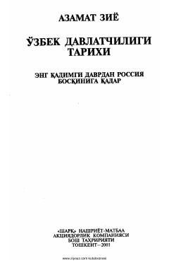

ODO'zbek davlatchiligining qadimgi davrlardan Rossiya bosqiniga qadar bo'lgan tarixi.
Mazkur kitob o'zbek davlatchiligining eng qadimgi davrlardan tortib Rossiya bosqiniga qadar bo'lgan tarixiy bosqichlarini yoritadi. Unda xalqimizning davlat qurilishi, milliy merosi va tarixiy taraqqiyot yo'llari ilmiy asosda tahlil qilingan.